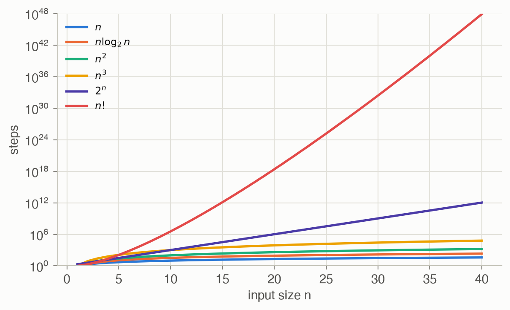

C · Computational Complexity
Appendices
Complexity theory measures how the time or memory an algorithm needs grows with the size of its input. On this site it explains why some methods are exact but useless beyond toy problems, and why later chapters turn to approximations. This appendix follows ADM Appendix C: asymptotic notation, time and space complexity classes, and decidability, with original examples.
At a glance
| Idea | Meaning | Example on this site |
|---|---|---|
| \(O(g)\) | grows no faster than \(g\), up to a constant | value iteration: \(O(\lvert\mathcal{S}\rvert^2\lvert\mathcal{A}\rvert)\) per sweep (Ch 7) |
| P | solvable in polynomial time | solving an MDP by linear programming (Ch 7) |
| NP | a proposed solution can be checked in polynomial time | 3SAT: checking an assignment is quick |
| NP-hard | at least as hard as every problem in NP | exact inference in Bayesian networks (Ch 3) |
| PSPACE | solvable with polynomial memory, however long it takes | finite-horizon POMDP planning (Ch 20) |
| NEXP | solvable in exponential time by guessing and checking | finite-horizon Dec-POMDP planning (Ch 27) |
| undecidable | no algorithm answers every instance correctly | exact infinite-horizon POMDP planning (Ch 21) |
Asymptotic notation
\[ f(n) = O\big(g(n)\big) \iff \text{there are } c > 0 \text{ and } n_0 \text{ with } \lvert f(n)\rvert \le c\,\lvert g(n)\rvert \text{ for all } n \ge n_0 \tag{1}\]
In words. Past some size \(n_0\), \(f\) never exceeds a fixed multiple of \(g\). It is an upper bound on the growth rate that ignores constant factors.
Term by term.
- \(f(n)\): the cost we care about, for example the number of steps on an input of size \(n\).
- \(g(n)\): a simple comparison function such as \(n^2\) or \(2^n\).
- \(c\): absorbs constant factors (a faster computer, a tighter loop); \(n_0\): ignores small inputs.
Why it holds. It is a definition, not a theorem. Two consequences are used constantly. For a sum of terms, only the fastest-growing one matters: \(3n^2 + 50n + 7 \le 60n^2\) for \(n \ge 1\), so it is \(O(n^2)\). And the “\(=\)” is really set membership: \(n = O(n^2)\) is true, but \(O(n^2) = n\) is meaningless. Related notation: \(\Omega(g)\) is the matching lower bound, and \(\Theta(g)\) means both.
Table 2 shows why the order matters more than the constant. At a billion steps per second, a cubic algorithm handles \(n = 100\) in a millisecond; an exponential one would outlast the universe (about 4 × 1017 seconds old).
| Steps | n = 10 | n = 20 | n = 50 | n = 100 |
|---|---|---|---|---|
| n | 10 ns | 20 ns | 50 ns | 100 ns |
| n log₂ n | 33 ns | 86 ns | 282 ns | 664 ns |
| n² | 100 ns | 400 ns | 3 µs | 10 µs |
| n³ | 1 µs | 8 µs | 125 µs | 1 ms |
| 2ⁿ | 1 µs | 1 ms | 13 days | 4.0 × 1013 years |
| n! | 4 ms | 77 years | 9.6 × 1047 years | 3.0 × 10141 years |
Time complexity classes
A decision problem asks a yes/no question, such as “is there a policy with expected value at least 10?” Classes group decision problems by the resources needed to answer them:
- P: answerable in time polynomial in the input size.
- NP: when the answer is yes, there is a certificate (a proposed solution) that can be checked in polynomial time.
- NP-hard: every NP problem can be translated to it in polynomial time, so a fast algorithm for it would give fast algorithms for all of NP.
- NP-complete: both in NP and NP-hard, so the hardest problems in NP.
Whether P = NP is open; most researchers believe the classes differ. Figure 1 shows the known inclusions and where this site’s problems sit.
Worked example: 3SAT
A 3SAT formula is an AND of clauses, each an OR of up to three literals (a variable or its negation). The question: is there a true/false assignment that makes every clause true? It was the first problem shown to be NP-complete (Cook 1971; Karp 1972 showed 21 more).
Take four variables and six clauses:
\[\begin{aligned}&(x_1 \lor x_2 \lor \lnot x_3) \land (\lnot x_1 \lor x_3 \lor x_4) \land (\lnot x_2 \lor \lnot x_4 \lor x_3) \land \\ &(x_1 \lor \lnot x_2 \lor \lnot x_4) \land (x_2 \lor x_3 \lor x_4) \land (\lnot x_1 \lor \lnot x_3 \lor \lnot x_4)\end{aligned}\]
- Checking is fast. Given an assignment, test each clause for one true literal: at most 18 literal lookups. That is why 3SAT is in NP.
- Finding may be slow. Brute force tries all \(2^4 = 16\) assignments in order. Here it succeeds at assignment number 2 (\(x_1, \dots, x_4\) = F, F, F, T), and 6 of the 16 assignments satisfy the formula.
- The worst case needs all of them. The formula whose clauses are all 8 sign patterns over \(x_1, x_2, x_3\) is unsatisfiable: each assignment breaks exactly one clause, the one whose three literals it makes false. Brute force checks all 8 assignments before answering no. With \(n\) variables that is \(2^n\) checks, the \(2^n\) row of Table 2.
Clever solvers prune most of the search on typical formulas, but no known algorithm avoids exponential time on every formula.
Proving hardness by reduction. To show a new problem \(Q\) is NP-hard, translate a known NP-complete problem such as 3SAT into instances of \(Q\) in polynomial time. A fast solver for \(Q\) would then solve 3SAT quickly. Cooper (1990) did this for inference in Bayesian networks: each variable of a 3SAT formula becomes a root node, each clause a node that is true when the clause holds, and an AND node at the bottom has positive probability exactly when the formula is satisfiable.
Space complexity
PSPACE holds the problems solvable with memory polynomial in the input size, with no limit on time. Memory can be reused and time cannot, so PSPACE contains NP: try every certificate one after another, reusing the same memory. Finite-horizon POMDP planning is PSPACE-complete (Papadimitriou and Tsitsiklis 1987), which is why exact belief-state planning (Ch 20) blows up. The number of conditional plans of depth \(h\) for the crying baby (3 actions, 2 observations) is \(3^{2^h - 1}\): 3, 27, 2,187, 14,348,907 for \(h = 1, \dots, 4\), and about 6 × 1014 for \(h = 5\).
Decidability
A problem is decidable if some algorithm always halts with the correct yes/no answer. Turing (1936) showed that the halting problem (does this program halt on this input?) is undecidable. The argument: suppose a program halts(p, x) existed. Build contrary(p), which loops forever if halts(p, p) says yes and halts otherwise. Then contrary(contrary) halts exactly when it doesn’t, a contradiction.
For decision making, Madani, Hanks and Condon (2003) showed that for infinite-horizon POMDPs, deciding whether some policy reaches a given value is undecidable under several criteria, such as total undiscounted reward and the probability of reaching a goal. No algorithm solves general infinite-horizon POMDPs exactly, so Chapter 21 computes bounds instead.
Where complexity shows up on this site
| Problem | Complexity | Source | Consequence on this site |
|---|---|---|---|
| Exact inference in Bayesian networks | NP-hard | Cooper 1990 | approximate inference by sampling (Ch 3) |
| Approximate inference to a fixed relative error | NP-hard | Dagum and Luby 1993 | sampling carries no worst-case guarantee (Ch 3) |
| Bayesian network structure learning | NP-complete | Chickering 1996 | local search over graphs (Ch 5) |
| MDP planning | P-complete | Papadimitriou and Tsitsiklis 1987 | exact methods for small state spaces (Ch 7) |
| POMDP planning, finite horizon | PSPACE-complete | Papadimitriou and Tsitsiklis 1987 | point-based and online methods (Ch 21, 22) |
| POMDP planning, infinite horizon | undecidable (several criteria) | Madani, Hanks and Condon 2003 | bounds and finite controllers (Ch 21, 23) |
| Nash equilibrium of a two-player game | PPAD-complete | Chen and Deng 2006; Daskalakis, Goldberg and Papadimitriou 2009 | numerical search on small games (Ch 24) |
| Dec-POMDP planning, finite horizon | NEXP-complete | Bernstein et al. 2002 | approximate joint planning (Ch 27) |
References.
- Bernstein, Givan, Immerman and Zilberstein, “The complexity of decentralized control of Markov decision processes,” Mathematics of Operations Research 27(4), 2002.
- Chen and Deng, “Settling the complexity of two-player Nash equilibrium,” FOCS, 2006.
- Chickering, “Learning Bayesian networks is NP-complete,” in Learning from Data, Springer, 1996.
- Cook, “The complexity of theorem-proving procedures,” STOC, 1971.
- Cooper, “The computational complexity of probabilistic inference using Bayesian belief networks,” Artificial Intelligence 42, 1990.
- Dagum and Luby, “Approximating probabilistic inference in Bayesian belief networks is NP-hard,” Artificial Intelligence 60, 1993.
- Daskalakis, Goldberg and Papadimitriou, “The complexity of computing a Nash equilibrium,” SIAM Journal on Computing 39(1), 2009.
- Karp, “Reducibility among combinatorial problems,” in Complexity of Computer Computations, 1972.
- Madani, Hanks and Condon, “On the undecidability of probabilistic planning and related stochastic optimization problems,” Artificial Intelligence 147, 2003.
- Papadimitriou and Tsitsiklis, “The complexity of Markov decision processes,” Mathematics of Operations Research 12(3), 1987.
- Turing, “On computable numbers, with an application to the Entscheidungsproblem,” Proceedings of the London Mathematical Society, 1936.
Figure

Code
The brute-force solver checks assignments in order and stops at the first that satisfies every clause.
def satisfies(clauses, x) -> bool:
"""Check an assignment in O(total literals): every clause needs one
true literal. x[i - 1] is the value of variable i."""
return all(any(x[abs(l) - 1] == (l > 0) for l in c) for c in clauses)
def brute_force_sat(clauses, n):
"""Try all 2^n assignments, in the order (F, ..., F), (F, ..., T), ...
Returns (first satisfying assignment or None, assignments checked)."""
for k, x in enumerate(product((False, True), repeat=n), start=1):
if satisfies(clauses, x):
return x, k
return None, 2**n# A clause is a tuple of nonzero Ints: +i is x_i, -i is not x_i.
# x[abs(l)] is variable |l|'s value (1-based, like the literals).
satisfies(clauses, x) = all(any(x[abs(l)] == (l > 0) for l in c) for c in clauses)
function brute_force_sat(clauses, n)
k = 0
# Iterators.product varies its first argument fastest, so reverse
# each tuple to try assignments in the same order as the Python code.
for t in Iterators.product(ntuple(_ -> (false, true), n)...)
k += 1
x = reverse(t)
satisfies(clauses, x) && return x, k
end
return nothing, 2^n
end
F = [(1, 2, -3), (-1, 3, 4), (-2, -4, 3), (1, -2, -4), (2, 3, 4), (-1, -3, -4)]
x, k = brute_force_sat(F, 4)
println("satisfied by ", x, " after ", k, " checks")
@assert x == (false, false, false, true) && k == 2
unsat = [(s1 * 1, s2 * 2, s3 * 3) for s1 in (1, -1) for s2 in (1, -1) for s3 in (1, -1)]
@assert brute_force_sat(unsat, 3) == (nothing, 8)